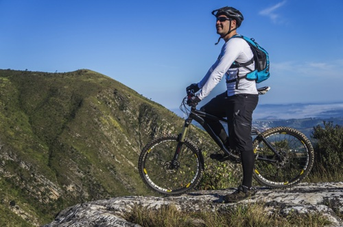

Find a group to ride with in the Trail Head
Find a group to ride with in the Trail Head  Repair your bike in the Kick Stand
Repair your bike in the Kick Stand  Drop us a comment in Two Tire Talk
Drop us a comment in Two Tire Talk validation only
Let The Adventures Begin
The Bozeman Montana area is rich in trails and the cycling community here is grateful for it. If shredding some trails is your thing then you can trek through Yellowstone National Park. If you’re into going on a smooth ride on a vacation, then we have plenty of paved options for you as well. The parks department here in Bozeman goes out of their way to ensure the outdoors can be enjoyed to the fullest. There are groomed trails waiting for you and puddles that want to get drained. You can find all of your riding adventures here.
Some of the best views you will ever see are only accessible by bike in the Sourdough Canyon along Bozeman Creek. The Bangtail Divide is rated among the highest quality trail in the entire United States. The routes around Mystic Lake will leave you with something to write home about. The historical markers along the Moonshine Gulch Trail indicate locations early settlers of the Bozeman area took root and established homesteads. Bozeman provides the perfect weather for enjoying the ride from Spring throughout the Fall.
If you do not have a love for cycling outdoors and on challenging terrain give Bozeman a try and you soon will. Many of today’s best and most renowned riders began their adventures in mountain biking here.